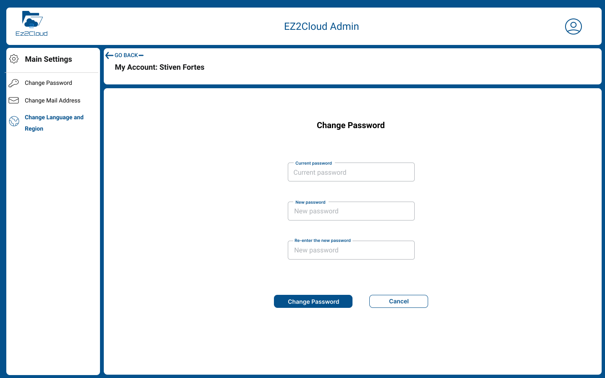
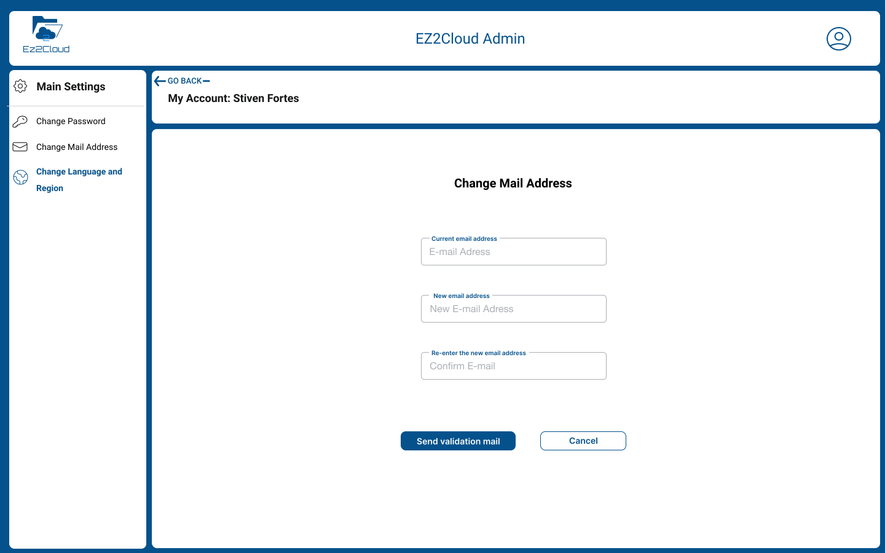
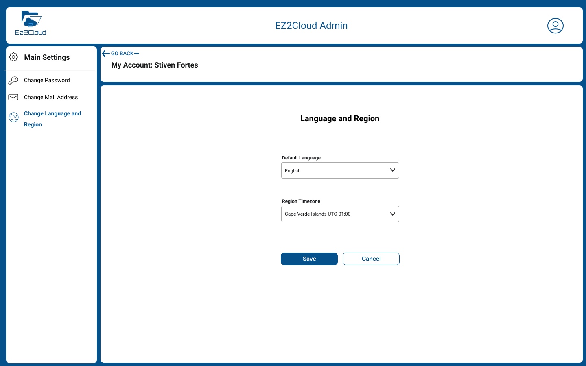

User Account Settings
The commom user account elements that it is possible to change are account password, account email address, language and timezeone. To open the Account settings click on the User icon at top right side and select Settings as shown in the following image.
Any user can change some settings that are defined by default as language and time zone. Also it is possible to change the acccount password.
Also in situations where a user has a different email address and want to assign the Ez2Cloud account to the new email it possible to change the email address

After open the settings account you first see the option to change account password as shown in the above image. Just enter the new password and click Change Password button.

To change the email address first click on the Change Email icon at the side menu. After view the Change Email page enter the new email address and click Send validation email button.

To change Locale Settings, first click on the Change Language and Region icon at the side menu. After view the Language and Region page enter the new settings and click Save button.
